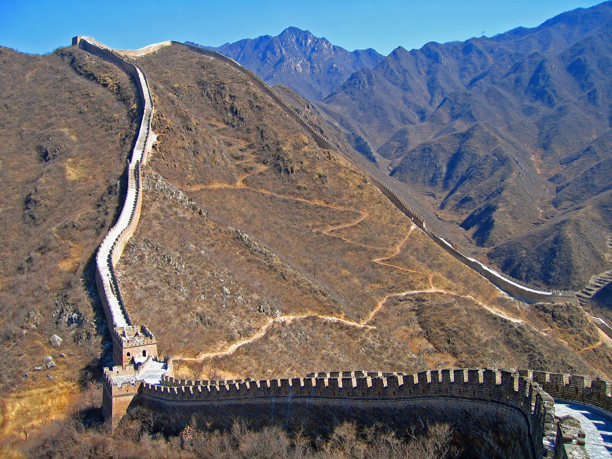
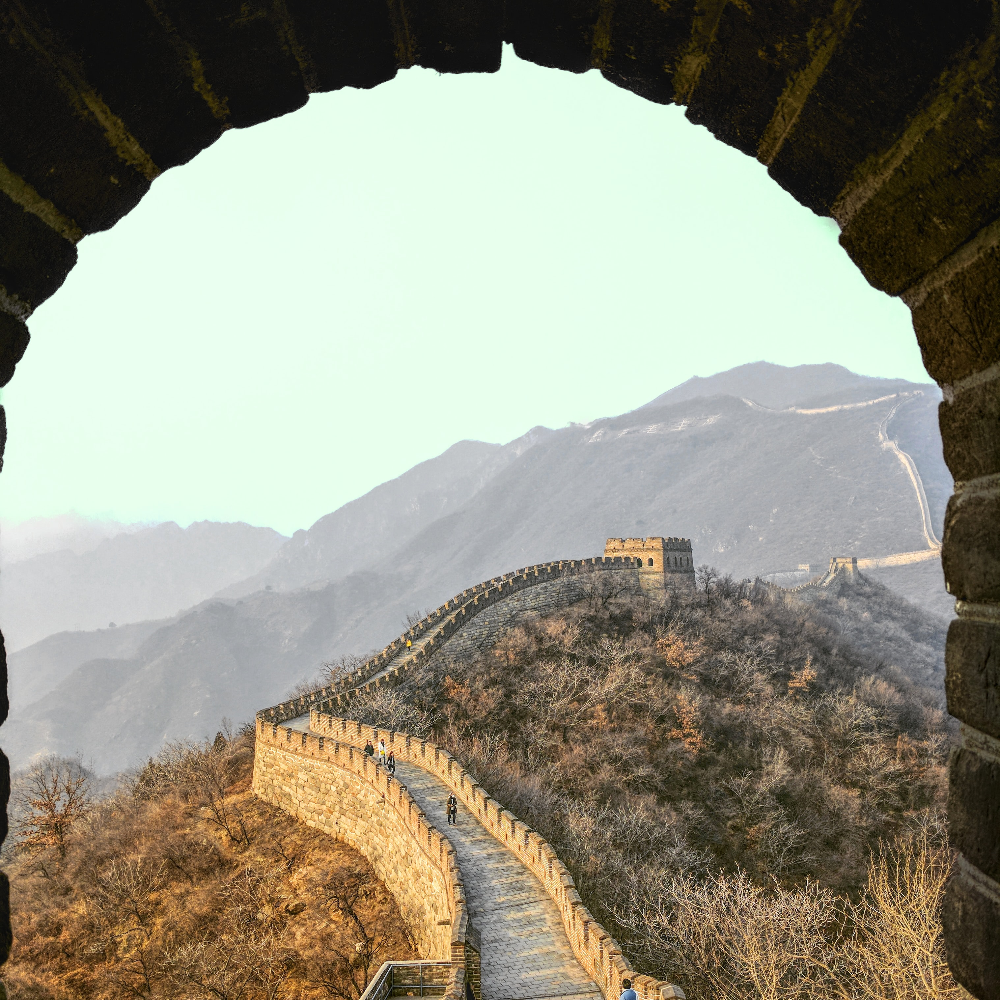
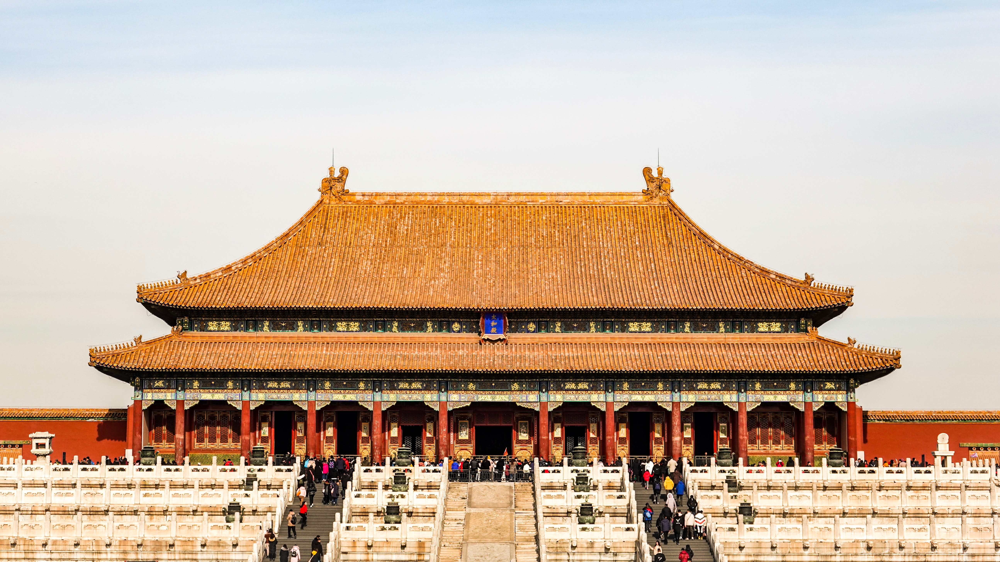
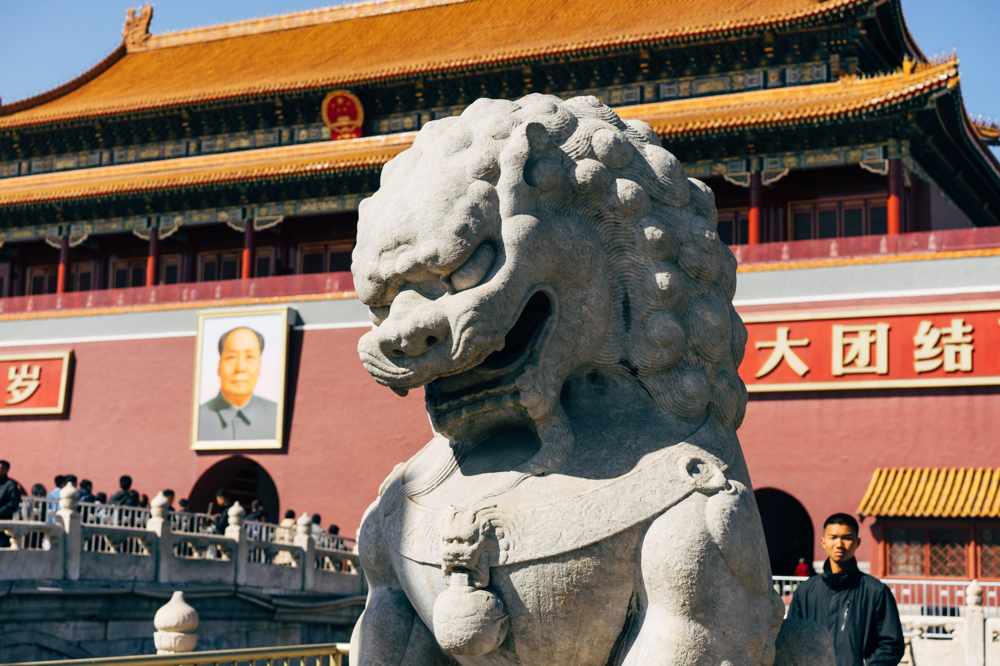
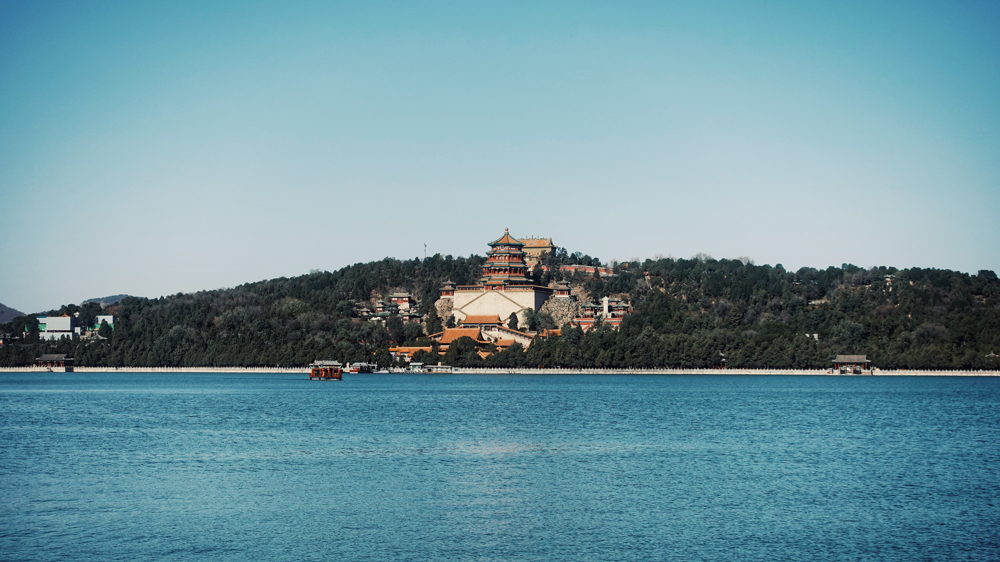

Beijing (ou Pékin), l'immense est empreinte d'une histoire de plus de 3millénaires.Elle est connue auusi bien pour son son architecture moderne que pour ses sites anciens tel que le palais impérial de la cité interdite dont la contruction date des dynastie Ming et Qing
Impossible de visiter Pékin sans arpenter l’une des sept merveilles du monde, classée en 1987 par l’Unesco au patrimoine mondiale de l’humanité. Cette gigantesque fortification militaire de plus de huit mille huit cent cinquante kilomètres est visible depuis la Lune. Elle fut construite et reconstruite à de multiples reprises entre le IIIe et le XVIIe siècle afin de protéger la frontière nord de la Chine.
Les tronçons les plus visités de Badaling et Mutianyu offrent des vues à couper le souffle. Plus difficile d’accès, le tronçon de Jinshanling permet une balade plus confidentielle et vaut véritablement le détour.


La cité interdite
Il serait vraiment dommage de visiter Pékin sans se rendre à l’ancienne résidence des empereurs, classée au patrimoine mondial de l’Unesco depuis 1987. Centre politique de la Chine, la Cité interdite fut construite au XVe siècle par un empereur de la dynastie Ming, sur le modèle des maisons traditionnelles chinoises, les siheyuans. Ce bâtiment exceptionnel, symbole du savoir-faire architectural chinois, est un des palais les plus imposants du monde, s’étendant sur pas moins de soixante-douze hectares et composé de cinquante-deux jardins. Jusqu’en 1924, la Cité interdite était exclusivement réservée à l’Empereur, sa famille et leurs serviteurs. La population n’était même pas autorisée à la regarder !


Le palais d'été
Envie de retrouver un peu de calme et de sérénité ? Rendez-vous au Palais d’été et son immense parc de deux cent quatre-vingts hectares, un chef d’œuvre de l’art paysager chinois. Vous pourrez y admirer le raffinement exquis de l’Empire du milieu, vous promener au bord du lac ou, pourquoi pas, opter pour une balade en barque, une activité sympathique à faire à Pékin en famille.

Le musée national de Chine
Que faire à Pékin un jour de pluie ? Faites un tour au Musée nationale de Chine, situé à l’est de la place Tian’anmen, afin d’en apprendre plus sur la culture et l’histoire de ce gigantesque pays.
Le parc olympique
Amateurs de sports, lors de votre visite à Pékin, n’hésitez pas à vous rendre au parc olympique, symbole de la puissance économique de la Chine contemporaine. Vous pourrez notamment y admirer le Stade national, aussi appelé le nid d’oiseau en raison de sa forme originale. Il s’agit de la plus grande structure d’acier inoxydable jamais construite, résistante à n’importe quel tremblement de terre. Inauguré lors des Jeux olympiques 2008, il peut accueillir jusqu’à quatre-vingt-onze milles spectateurs.